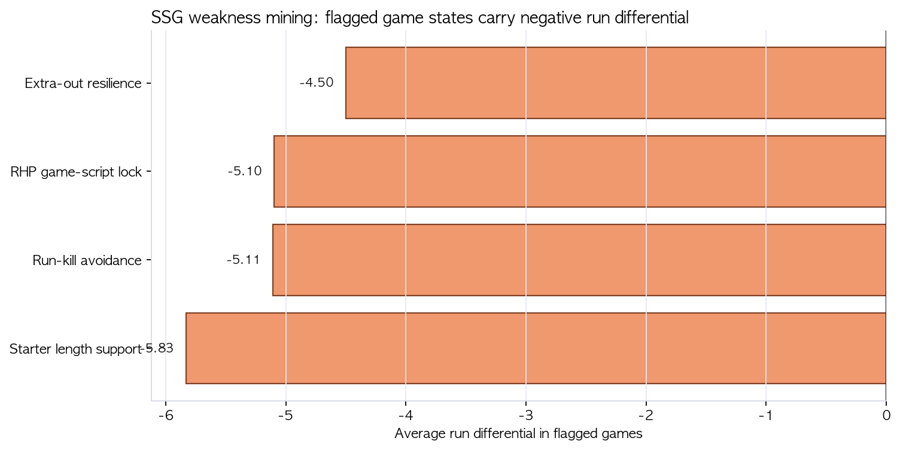
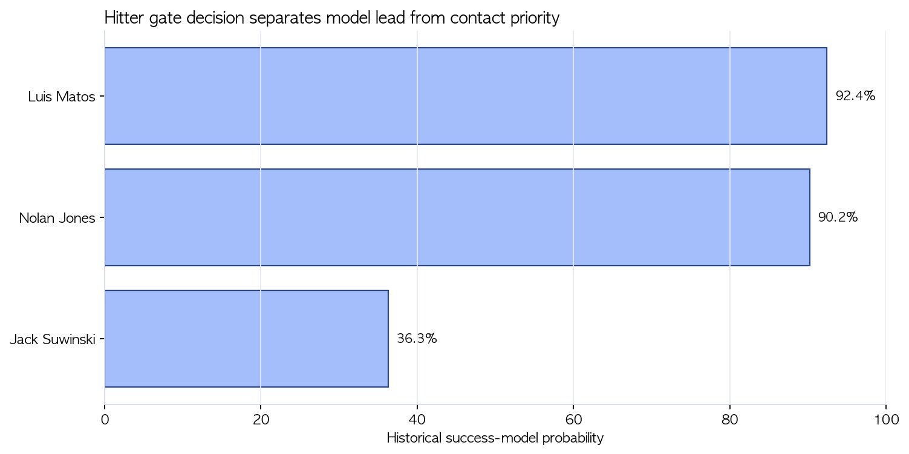
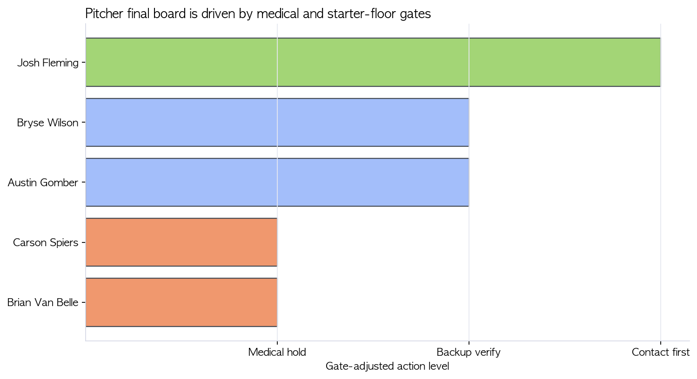

SSG 랜더스 외국인 선수 영입 전략
데이터 마이닝 기반 외국인 타자·선발투수 후보 선정 보고서
초록(Abstract)
국문
본 보고서는 SSG 랜더스의 외국인 타자 및 외국인 선발투수 영입 문제를 일반적인 데이터마이닝 절차에 맞춰 재구성했다. 분석은 SSG의 보강 문제가 단순한 장타 부족인지, 특정 경기 상황에서의 흐름 단절인지 검증하는 것에서 시작했다. KBO/STATIZ, SSG 상황별 경기 데이터, MLB Savant, MiLB 성적, roster/transaction, public salary/contract, medical status, 기존 output table을 통합해 후보 funnel을 만들고, Team Need Mining Model, Historical KBO Success/Failure Model, Similarity / Archetype Matching Model, KBO Translation Risk Model, Market Feasibility Model, Medical / Failure Gate를 결합했다. 최종 후보는 타자 Luis Matos, Nolan Jones, Jack Suwinski, 투수 Josh Fleming, Bryse Wilson, Austin Gomber다. 최종 접촉 1순위는 타자 Luis Matos, 투수 Josh Fleming이다.
English
This report reframes SSG Landers' foreign hitter and starting pitcher acquisition problem as a structured data-mining task. The analysis starts by identifying whether SSG's roster need is a generic power shortage or a game-state interaction problem. Using KBO/STATIZ data, SSG situational tables, MLB Savant, MiLB statistics, roster and transaction data, salary/contract signals, medical status, and model outputs, the report builds a candidate funnel and evaluates players through team-need mining, historical KBO success/failure modeling, archetype matching, KBO translation risk, market feasibility, and medical/failure gates. The final hitter board is Luis Matos, Nolan Jones, and Jack Suwinski; the final pitcher board is Josh Fleming, Bryse Wilson, and Austin Gomber. The recommended first contacts are Luis Matos and Josh Fleming.
Key Takeaways
- SSG의 보강 문제는 단순 장타 부족이 아니라 RHP game-script, 1루 주자 이후 전환, run-kill, extra-out 이후 복구 실패가 결합된 game-state interaction 문제다.
- 후보 선정은 전체 시장에서 시작해 후보 생성 모듈, 데이터마이닝 gate, raw ranking, gate-adjusted ranking으로 좁히는 funnel로 설계했다.
- 타자 최종 후보 3명은 Luis Matos, Nolan Jones, Jack Suwinski다.
- 투수 최종 후보 3명은 Josh Fleming, Bryse Wilson, Austin Gomber다. Carson Spiers와 Brian Van Belle은 raw 상위였지만 medical hold로 보류한다.
- 타자 raw 1위는 Nolan Jones지만, gate-adjusted 최종 접촉 1순위는 Luis Matos다. 투수 최종 접촉 1순위는 Josh Fleming이다.
1. 서론
1.1 문제 정의
SSG의 외국인 선수 영입 문제는 가장 좋은 누적 성적을 가진 선수를 찾는 문제가 아니다. SSG는 현재 팀의 경기 구조상 반복적으로 발생하는 약점을 완화하고, KBO 환경에서 성과가 번역될 가능성이 있으며, 실제 시장에서 접근 가능한 외국인 타자와 선발투수를 찾아야 한다. 따라서 최종 산출물은 “좋은 선수 순위”가 아니라 “실행 가능한 접촉 우선순위”다.
1.2 데이터마이닝 접근의 필요성
단순 OPS, HR, ERA, K/9 순위는 후보의 표면 능력만 보여준다. SSG의 실제 의사결정에는 세 가지 추가 질문이 필요하다. 첫째, 선수가 SSG의 특정 약점을 해결하는가. 둘째, MLB/MiLB 성과가 KBO에서 유지될 수 있는가. 셋째, 계약·의료·시장 접근성까지 고려해 실제 접촉 가능한가. 데이터마이닝 절차는 이 세 질문을 후보 funnel과 gate-adjusted ranking으로 분리한다.
1.3 분석 질문
| RQ | 질문 | 데이터마이닝 단계 | 최종 산출물 |
|---|---|---|---|
| RQ1 | SSG의 보강 문제는 무엇인가? | Business Understanding / Team Need Mining | SSG weakness rule |
| RQ2 | 약점은 어떤 선수 조건으로 변환되는가? | Data Preparation / Feature Contract | 타자·투수 feature contract |
| RQ3 | 후보군은 어떻게 생성되고 줄어드는가? | Candidate Funnel | raw pool → gate-adjusted board |
| RQ4 | 각 모델은 어떤 관점에서 후보를 평가하는가? | Modeling / Evaluation | 모델 구성표와 성능 평가표 |
| RQ5 | 타자·투수 최종 후보 3명은 누구인가? | Ensemble Decision | slot별 gate-adjusted Top 3 |
| RQ6 | 최종 접촉 1순위는 누구인가? | Deployment | 접촉 우선순위 Plan A |
1.4 최종 의사결정 구조
최종 의사결정은 Raw Model Ranking과 Gate-adjusted Ranking을 분리한다. Raw ranking은 선수의 데이터상 매력도를 의미하고, gate-adjusted ranking은 계약, 비용, 의료, 시장 접근성, KBO행 가능성을 반영한 실행 순위다.
2. 데이터 이해
2.1 데이터 소스
| 데이터 소스 | 기간 | 단위 | 주요 변수 | 사용 목적 | 한계 |
|---|---|---|---|---|---|
| KBO/STATIZ 팀·선수 데이터 | 2023-2026 | 팀/선수/경기/상황 | OPS, wOBA proxy, 상황별 성과, 승패, 득실 | SSG 문제 정의와 KBO label 구성 | 상황별 pitch-level 세부는 제한적 |
| SSG 상황별 경기 데이터 | 2026 | game-state rule | 상대 선발 유형, 주자 상황, OF/DH 생산성, run differential | Team Need Mining Model | 시즌 중 표본이라 계속 갱신 필요 |
| MLB Savant | 2023-2026 | pitch/player-season | xwOBA, chase, whiff, hard-hit, barrel, 구종/속도 split | 타자 raw skill과 KBO translation | 일부 후보는 MLB 표본이 작음 |
| MiLB 성적 데이터 | 2025-2026 중심 | player-season/role | PA, IP, GS, K9, BB9, HR9, ERA, WHIP | 후보 시장 구축과 투수 starter floor | 리그/구장 보정이 완전하지 않음 |
| MLB roster/transaction | 2025-10 이후 | 선수 상태 | 40-man, DFA, outright, minor contract, active/injured status | Market Feasibility Model | 실시간 변동 가능 |
| NPB/CPBL 공개 roster/stat seed | 2026 | 선수/리그 | 공식 roster, basic stat, 외국인/아시아쿼터 후보 seed | 시장 depth 확인 | 최종 타자·선발투수 결론에는 보조적 사용 |
| public salary/contract/medical | 2026-06 확인 | 선수 | salary signal, contract status, injury list | Market / Medical Gate | 비공개 buyout과 구단 간 cost-share는 확인 필요 |
| 기존 output tables | 프로젝트 산출물 | 모델/후보/게이트 | success prob, failure prob, ensemble score, gate decision | 최종 보고서 재현성 | 원천 데이터 갱신 시 재빌드 필요 |
2.2 분석 단위
타자는 선수-시즌/최근 PA 단위를 기본으로 하고, 역할은 OF/DH 가능성, 좌우타, contact floor, on-base/damage profile로 정의한다. 투수는 선수-시즌/최근 IP/GS 단위를 기본으로 하고, 역할은 선발 지속성, command stability, traffic damage control, KBO/ABS translation으로 정의한다.
2.3 주요 변수
타자는 K%, whiff%, wOBA/xwOBA, hard-hit%, barrel%, chase%, OF/DH role, market status를 중심으로 본다. 투수는 IP, GS, K9, BB9, HR9, ERA, WHIP, starter role, injury status, contract status를 중심으로 본다.
2.4 데이터 한계와 신뢰도
| 데이터 | 형태 | 최신성 | 누락 가능성 | 최종 후보 직접성 |
|---|---|---|---|---|
| KBO/STATIZ snapshot | raw + processed | 중간 | 중간 | 높음 |
| MLB Savant / MiLB stats | raw + model mart | 높음 | 후보별 차이 | 높음 |
| Roster / transaction | processed output | 매우 높음 | 높음 | 매우 높음 |
| Salary / medical source note | manual verified table | 매우 높음 | 높음 | 매우 높음 |
| NPB/CPBL seed | official/public seed | 중간 | 중간 | 낮음 |
2.5 leakage 방지 원칙
과거 KBO 외국인 선수의 KBO 입단 후 성적은 label 또는 사후 검증에만 사용한다. 후보 평가 feature에는 KBO 입단 후 성과를 넣지 않는다. 모델은 “KBO에서 이미 성공한 결과”를 맞히는 것이 아니라, “입단 전 정보로 성공 가능성을 추정하는 것”이다.
3. 후보군 생성과 변수 설계
3.1 전체 후보 시장 정의
후보 시장은 MLB 40인 로스터 경계선, DFA/outright/minor league contract 선수, AAA regular role 선수, 최근 트랜잭션 후보, KBO행 가능성이 있는 나이·계약 상태의 선수로 구성했다. NPB/CPBL 후보는 시장 depth 확인과 아시아쿼터 확장 가능성 검토에 사용했다.
3.2 후보 funnel
| 단계 | 타자 잔존 | 투수 잔존 | 판정 의미 |
|---|---|---|---|
| Step 1. 전체 구조화 시장 | 736 | 1,009 | MLB/MiLB/roster 기반으로 모델 입력 가능한 후보 pool 구성 |
| Step 2. 후보 생성 모듈 | 16 | 18 | Market Screen, Team Fit Screen, Upside Screen에서 후보 board로 이동 |
| Step 3. 기본 데이터마이닝 gate | 6 | 3 | 비40인/시장 접근성/표본/부상 flag를 1차 통과 |
| Step 4. Raw Top 3 | 3 | 3 | 순수 모델 점수와 모듈 반복 등장 신호 기준 |
| Step 5. Gate-adjusted Top 3 | 3 | 3 | 계약·의료·실행 가능성을 반영한 최종 접촉 board |
3.3 타자 feature engineering
| Feature Group | 주요 변수 | 해석 |
|---|---|---|
| Contact Floor | K%, whiff%, zone contact, two-strike proxy | 이닝을 끊지 않는 최소 컨택 안정성 |
| On-base / Damage | OBP, wOBA/xwOBA, SLG/ISO, HardHit%, Barrel% | 출루와 장타가 함께 존재하는지 |
| RHP Game-Script Fit | vs RHP OBP/SLG/xwOBA, chase/whiff penalty | 우투 선발 경기에서 공격 흐름을 복구할 수 있는지 |
| Run-kill Avoidance | GB%, GDP proxy, chase%, weak contact% | 병살·삼진·약한 타구로 이닝을 끝낼 위험 |
| Role / Market Fit | OF/DH role, 40-man, DFA/outright/minor deal, salary signal | SSG가 실제로 쓸 수 있고 데려올 수 있는지 |
3.4 투수 feature engineering
| Feature Group | 주요 변수 | 해석 |
|---|---|---|
| Command Stability | BB%, BB9, K-BB%, zone%, first-pitch proxy | 볼넷으로 이닝을 키우지 않는 안정성 |
| Damage Control | HR9, hard-hit allowed, GB%, LOB proxy | traffic 이후 장타/대량실점 억제 |
| Starter Floor | GS, IP/GS, pitch count proxy, recent workload | 5이닝 이상 버틸 수 있는 최소 근거 |
| KBO / ABS Translation | zone command, chase dependency, pitch mix stability | ABS 환경에서 볼넷 리스크가 커지지 않는지 |
| Market / Medical Fit | contract, salary, injury list, velocity trend | 점수와 별개로 실제 영입 가능한지 |
3.5 SSG 약점의 feature contract 변환

| 슬롯 | SSG weakness | Player feature | 방향 | 의사결정 사용 | 해석 |
|---|---|---|---|---|---|
| 타자 | RHP game-script unlocker | vs_rhp_on_base_damage | high | L2 archetype + L4 translation + L6 fit | SSG의 문제는 단순 홈런이 아니라 우투 선발 경기에서 외야/DH가 이닝을 다시 여는 능력이다. |
| 타자 | run-kill avoidance | low_gdp_cs_run_kill_risk | low | L5 failure risk + L6 fit | 병살/도루자 같은 이닝 단절이 붙는 순간 SSG의 복구 루트가 사라진다. |
| 타자 | two-strike survival | two_strike_contact_floor | high | L4 translation + L5 failure risk | SSG가 필요한 외야수는 장타만 있는 타자가 아니라 이닝을 끊지 않는 타자다. |
| 타자 | role stability | corner_of_or_dh_role_continuity | high | L3 market + L6 fit | 타자 메시지는 외야/DH 슬롯에서 바로 쓸 수 있어야 의미가 있다. |
| 투수 | traffic-command stabilizer | low_free_pass_volatility | low | L4 translation + L5 failure risk + L6 fit | SSG는 수비 실수나 추가 출루가 생긴 뒤 추가실점으로 번지는 경기를 줄여야 한다. |
| 투수 | starter length floor | five_inning_floor | high | L3 market + L5 risk + L6 fit | 짧은 선발은 support-only 메시지지만, 강팀전에서 약점이 커지는 구조라 후보 리스크 가중치로 남긴다. |
| 투수 | extra-out resilience | damage_control_after_traffic | high | L5 failure risk + L6 fit | 비자책/실책성 상황 이후 한 이닝이 무너지는 흐름을 끊는 투수가 필요하다. |
| 투수 | ABS adaptation | zone_command_not_called_strike_dependency | high | L4 translation + L5 failure risk | KBO ABS 환경에서는 커맨드 불안이 볼넷과 긴 이닝으로 바로 번질 수 있다. |
| 투수 | shock absorber | multi_inning_or_spot_start_flex | high | L3 market + L5 risk + L6 fit | 아쿼는 정규 외인 에이스 대체가 아니라 짧은 선발/불펜 과부하 충격을 흡수하는 옵션으로 해석한다. |
| 투수 | contract-realistic optionality | market_access_and_role_acceptance | high | L3 market + L5 risk | 아쿼는 시장성이 핵심이다. SSG fit이 좋아도 실제 영입 가능성이 없으면 제외한다. |
4. 모델링
4.1 모델 구성
| 모델명 | 목적 | 입력 | 출력 | 사용 강도 |
|---|---|---|---|---|
| Model A. Team Need Mining Model | SSG 약점을 game-state interaction으로 정의 | SSG 상황별 팀 성과, 상대 선발 유형, 주자 상황, 득실 | weakness rule, feature contract | 공통 기준 |
| Model B. Historical KBO Success/Failure Model | 입단 전 정보로 성공/실패 확률 추정 | pre-KBO Savant/MiLB feature | success/failure probability | 타자 강함, 투수 진단 |
| Model C. Similarity / Archetype Matching Model | KBO 성공 유형 또는 SSG 필요 유형과 유사도 계산 | 표준화 feature vector | archetype score, role similarity | 보조 |
| Model D. KBO Translation Risk Model | MLB/MiLB 성과가 KBO에서 유지되지 않을 위험 평가 | K%, chase, whiff, BB9, HR9, starter continuity | PASS/YELLOW/HOLD/RED | 강함 |
| Model E. Market Feasibility Model | 실제 영입 가능성 평가 | 40-man, DFA/outright, minor contract, salary signal | available/conditional/blocked | hard gate |
| Model F. Medical / Failure Gate | 점수 상위지만 실행 불가능한 후보 보류 | IL, surgery, workload, role mismatch | PASS/YELLOW/HOLD/RED | hard gate |
4.2 Model A. Team Need Mining Model
이 모델은 선수를 직접 뽑는 모델이 아니라, 후보에게 요구되는 조건을 정의하는 모델이다. SSG의 약점은 OF 홈런 부족보다 RHP game-script lock, run-kill avoidance, extra-out resilience에서 더 구체적으로 드러난다.
4.3 Model B. Historical KBO Success/Failure Model
이 모델은 과거 KBO 외국인 선수의 입단 전 데이터를 바탕으로 성공/실패 가능성을 추정한다. 타자 모델은 success/failure probability를 주요 신호로 사용하고, 투수 모델은 diagnostic signal로 제한한다.
4.4 Model C. Similarity / Archetype Matching Model
이 모델은 “성적이 좋은 선수”가 아니라 “KBO에서 성공한 유형 또는 SSG가 원하는 역할과 닮은 선수”를 찾는다. 표준화된 feature vector를 기반으로 role similarity와 archetype score를 계산하는 방식이다.
4.5 Model D. KBO Translation Risk Model
타자는 과도한 K%, 높은 chase%, 낮은 contact, 변화구/저속 구종 약점, 높은 run-kill risk를 경고한다. 투수는 높은 BB9, HR9, 낮은 GB%, 선발 지속성 부족, ABS 환경에서의 볼넷 증가 가능성을 경고한다.
4.6 Model E/F. Market Feasibility와 Medical / Failure Gate
Market Feasibility Model은 40-man, DFA/outright, minor contract, salary signal, option status를 평가한다. Medical / Failure Gate는 점수는 높지만 최종 후보에서 보류해야 하는 선수를 식별한다. 이 gate는 점수 모델이 아니라 hard gate다.
5. 앙상블 설계
5.1 타자 앙상블
타자는 SSG가 단순 거포보다 이닝을 다시 여는 OF/DH 자원이 필요하다는 전제에서 설계했다. 따라서 Historical Success Model, SSG Fit, KBO Translation, Contact / Run-kill Avoidance, Market Feasibility, Cross-model Stability를 함께 본다.
5.2 투수 앙상블
투수는 historical classifier의 안정성이 낮기 때문에 해당 신호를 낮게 반영하고, command stability, starter floor, damage control, market feasibility, medical gate를 더 중요하게 본다.
5.3 모델 weight
| 슬롯 | 모듈 | 가중치 | 근거 |
|---|---|---|---|
| 타자 | historical_success_failure_classifier | 0.40 | 타자 AUC가 성공 0.833, 실패 0.738로 promoted gate를 통과했기 때문에 가장 큰 base learner로 사용 |
| 타자 | ssg_fit_translation_pipeline | 0.25 | SSG 2026 상황별 약점, KBO 번역, 영입 등급을 동시에 반영하는 구조적 base learner |
| 타자 | kbo_adaptation_filter | 0.15 | 변화구/저속 구종 대응과 좌타/스위치 적합성을 통해 KBO 적응 실패를 줄이는 filter |
| 타자 | market_inefficiency_feature_model | 0.15 | AAA 장점과 MLB 결함의 translation gap, quality contact를 통해 시장 비효율을 탐색 |
| 타자 | cross_model_consensus | 0.05 | 서로 다른 가정의 base learner에서 반복 등장한 후보에 작은 안정성 보너스 |
| 투수 | historical_success_failure_classifier | 0.05 | 투수 AUC 0.603으로 watch 등급이므로 확정 추천이 아닌 약한 diagnostic signal로만 사용 |
| 투수 | ssg_fit_translation_pipeline | 0.25 | 선발 이닝, KBO ERA 번역, 영입 등급을 반영하는 구조적 base learner |
| 투수 | kbo_adaptation_filter | 0.25 | BB/9, HR/9, third-time wOBA로 KBO 선발 지속성과 ABS 적응 위험을 줄이는 filter |
| 투수 | market_inefficiency_feature_model | 0.20 | 선발 지속성, GB, HR 억제, command feature로 MLB fringe 선발 시장을 탐색 |
| 투수 | cross_model_consensus | 0.25 | 투수 supervised model이 약하기 때문에 여러 독립 분석에서 반복 등장하는지를 더 크게 반영 |
5.4 모델 성능 평가
| 모델명 | 대상 | 표본 수 | feature family | 주요 성능 | 해석 | 사용 강도 |
|---|---|---|---|---|---|---|
| hitter_success_classifier | 타자 | 22 | savant_only | AUC 0.833 success / 0.738 failure | 주요 신호로 사용 | High |
| hitter_failure_classifier | 타자 | 22 | savant_only | AUC 0.833 success / 0.738 failure | 주요 신호로 사용 | High |
| pitcher_success_diagnostic | 투수 | 49 | milb_damage_command | AUC 0.603 diagnostic | 확정 신호가 아니라 보조 진단으로 사용 | Low/Diagnostic |
| pitcher_failure_warning_only | 투수 | 49 | milb_damage_command | AUC 0.603 diagnostic | 확정 신호가 아니라 보조 진단으로 사용 | Low/Diagnostic |
5.5 Raw Ranking과 Gate-adjusted Ranking
Raw ranking은 순수 모델 점수와 cross-model consistency를 반영한다. Gate-adjusted ranking은 계약, 비용, 의료, 시장 접근성, KBO행 가능성을 반영한다. raw 1위가 최종 1순위가 아닐 수 있으며, 이는 모델 실패가 아니라 영입 실행 가능성 평가가 추가된 결과다.
6. 결과
6.1 SSG 보강 문제의 데이터마이닝 결과
SSG의 타자 보강 문제는 장타 총량이 아니라 RHP game-script에서 OF/DH가 공격 흐름을 다시 열지 못하는 구조다. 투수 보강 문제는 구위 총량보다 traffic 이후 볼넷과 장타를 억제하고 5이닝 이상을 버티는 선발 안정성이다.
6.2 타자 후보 Raw Top 3
| Raw 순위 | 선수 | Raw score | Success | Failure | 주요 지지 모듈 |
|---|---|---|---|---|---|
| 1 | Nolan Jones | 0.5055 | 90.2% | 9.2% | Historical Success Model; Team Fit Screen; Market Screen; Cross-model Stability |
| 2 | Luis Matos | 0.3617 | 92.4% | 8.2% | Historical Success Model; Market Screen; Contact Floor Screen |
| 3 | Jack Suwinski | 0.3417 | - | - | Upside Screen; Team Fit Screen; Risk Gate |
6.3 타자 후보 Gate-adjusted Top 3

| Gate 순위 | 선수 | 최종 판단 | Team need fit | KBO translation | Risk summary |
|---|---|---|---|---|---|
| 1 | Luis Matos | CONTACT_1ST | RHP game-script에서 이닝을 끊지 않는 OF/DH 전환형 타자 | 낮은 K%와 높은 success probability로 KBO contact floor가 가장 안정적 | 볼넷/장타 총량은 Jones보다 낮아 중심타선 해결사로 과대해석하면 안 됨 |
| 2 | Nolan Jones | MODEL_LEAD_CONDITIONAL | 좌타 코너 OF 파워와 출루를 동시에 제공하는 raw model 1위 | Hard-hit, barrel, historical success signal이 모두 강함 | 2026 현금 신호가 커서 잔여 부담액과 cost-share 확인 전에는 실행 순위가 내려감 |
| 3 | Jack Suwinski | UPSIDE_HOLD | 볼넷과 배럴 기반의 고위험 장타 보완 후보 | BB%와 barrel은 KBO에서 장점으로 번역될 수 있음 | K%와 failure probability가 높아 run-kill avoidance 요구와 충돌 가능 |
6.4 타자 최종 1인
타자 부문에서 raw model은 Nolan Jones를 가장 높게 평가했다. 그러나 계약 비용, 시장 접근성, KBO행 가능성을 반영한 gate-adjusted ranking에서는 Luis Matos가 최종 접촉 1순위로 올라온다. 이는 raw model의 실패가 아니라, 선수 능력 평가와 영입 실행 가능성 평가를 분리했기 때문에 발생한 합리적 순위 변화다.
Luis Matos
후보 요약. 우타 외야수, MIL 조직, 비40인 접근성 후보이며 최종 판정은 CONTACT_1ST다.
데이터상 강점. K% 16.6% 수준의 contact floor, success probability 92.4%, failure probability 8.2%로 historical success model에서 가장 안정적이다. SSG가 필요로 하는 RHP game-script unlocker와 OF/DH rotation stabilizer 조건에도 맞는다.
모델이 지지한 이유. Historical Success Model, Market Screen, Contact Floor Screen에서 동시에 살아남았다. Jones보다 raw power는 낮지만, 접촉 안정성과 비용 신호가 좋다.
리스크. BB/장타 총량은 model lead급 후보보다 낮다. 중심타선 전체를 혼자 해결하는 선수로 정의하면 과대평가가 된다. 시장 권리와 실제 assignment 조건 확인이 필요하다.
SSG 내 역할. RHP game-script unlocker, run-kill avoidance hitter, OF/DH rotation stabilizer.
한 줄 결론. Matos는 SSG의 공격 흐름 단절을 줄일 수 있지만, 장타 총량 기대치를 과도하게 잡으면 안 된다.
Nolan Jones
후보 요약. 좌타 코너 외야수, CLE 조직, raw model 기준 타자 1위이며 최종 판정은 MODEL_LEAD_CONDITIONAL이다.
데이터상 강점. hard-hit, barrel, 출루와 장타의 결합이 강하다. success probability 90.2%, failure probability 9.2%로 Historical Success Model이 높게 평가했다.
모델이 지지한 이유. Historical Success Model, Team Fit Screen, Market Screen, Cross-model Stability가 동시에 지지한다. SSG가 원하는 좌타 코너 OF 파워 보완에 가장 직접적이다.
리스크. 2026 현금 신호가 $2.00M로 확인되어 정규 외국인 계약 또는 injury replacement 비용 구조에서 부담이 될 수 있다. K% 28.0% 수준의 swing-and-miss 리스크도 관리해야 한다.
SSG 내 역할. middle-order bridge, RHP damage hitter, corner OF/DH power source.
한 줄 결론. Jones는 능력 기준 1위지만, 비용 조건이 해결되지 않으면 실행 우선순위는 Matos보다 낮다.
Jack Suwinski
후보 요약. 좌타 외야수, LAD 조직, upside 후보이며 최종 판정은 UPSIDE_HOLD다.
데이터상 강점. BB% 13.5%, barrel 11.8%는 KBO에서 장점으로 번역될 수 있다. 볼넷과 장타가 동시에 있는 유형이어서 SSG의 외야 공격 ceiling을 끌어올릴 수 있다.
모델이 지지한 이유. Upside Screen과 Team Fit Screen에서 남았다. 단순 OPS보다 plate discipline + barrel 조합이 강점이다.
리스크. success probability 36.3%, failure probability 68.4%로 실패 경고가 크다. K% 31.5%는 SSG의 run-kill avoidance 요구와 충돌할 수 있다.
SSG 내 역할. upside power bat, lower-middle-order bridge, selective platoon OF.
한 줄 결론. Suwinski는 장타 upside를 제공하지만, 삼진 리스크가 해소되지 않으면 SSG의 숨은 약점을 오히려 키울 수 있다.
6.5 투수 후보 Raw Top 3
| Raw 순위 | 선수 | Raw score | Success | Failure | 주요 지지 모듈 |
|---|---|---|---|---|---|
| 1 | Josh Fleming | 0.6375 | - | - | Team Need Mining Model; Market Screen; Cross-model Stability; Risk Gate |
| 2 | Carson Spiers | 0.3125 | - | - | Starter Floor Screen; Historical Diagnostic Model; Medical Gate |
| 3 | Brian Van Belle | 0.2625 | - | - | Command Stability Screen; Starter Floor Screen; Medical Gate |
6.6 투수 후보 Gate-adjusted Top 3

| Gate 순위 | 선수 | 최종 판단 | Team need fit | KBO translation | Risk summary |
|---|---|---|---|---|---|
| 1 | Josh Fleming | CONTACT_1ST | 좌완 선발/스윙맨으로 traffic-command starter 조건에 가장 근접 | 낮은 HR9와 관리 가능한 BB9로 KBO damage control 조건을 충족 | K/9 upside는 제한적이므로 1선발 에이스가 아니라 안정화 자원으로 봐야 함 |
| 2 | Bryse Wilson | BACKUP_VERIFY | 103이닝/19선발 표본으로 starter floor 검증 가능 | K9 8.65, BB9 2.79, HR9 0.96으로 기본 translation 조건은 보유 | 모델 margin이 낮아 단독 결론이 아니라 비교 검증군으로만 사용 |
| 3 | Austin Gomber | BACKUP_VERIFY | 좌완 선발 이닝 축적형 후보 | 172이닝/37선발 표본은 장점이나 HR9 1.46은 KBO 번역 위험 | 장타 억제와 최근 구속 확인 전에는 1순위로 올리기 어려움 |
6.7 투수 최종 1인
투수 부문은 타자보다 historical classifier의 예측 안정성이 낮기 때문에 raw score만으로 최종 결론을 내리기 어렵다. 따라서 command, starter floor, medical gate, contract feasibility를 함께 반영했다. 이 과정을 통과한 최종 접촉 1순위는 Josh Fleming이다.
Josh Fleming
후보 요약. 좌완 투수, TOR 조직, 선발/스윙맨 역할 후보이며 최종 판정은 CONTACT_1ST다.
데이터상 강점. raw ensemble 1위, 낮은 HR9, 관리 가능한 BB9, 좌완성, minor contract 접근성이 결합된다. SSG가 필요로 하는 traffic-command starter 조건에 가장 직접적으로 맞는다.
모델이 지지한 이유. Team Need Mining Model, Market Screen, Cross-model Stability, Risk Gate를 함께 통과했다. 투수 모델의 예측확률보다 역할 fit과 실행 가능성이 더 큰 근거다.
리스크. K/9 upside는 제한적이어서 KBO에서 압도형 1선발을 기대하면 위험하다. 최근 availability와 실제 선발 빌드업 상태 확인이 필요하다.
SSG 내 역할. traffic-command starter, swingman / spot starter, HR/BB damage controller.
한 줄 결론. Fleming은 SSG 선발 운영을 안정화할 수 있지만, 에이스형 구위가 아니라 traffic 관리형 투수로 정의해야 한다.
Bryse Wilson
후보 요약. 우완 투수, PHI 조직, 선발 이닝 표본이 있는 비교 검증군이며 최종 판정은 BACKUP_VERIFY다.
데이터상 강점. 2025-2026 MiLB 103이닝, 19선발, K9 8.65, BB9 2.79, HR9 0.96으로 starter floor와 damage control의 기본 조건을 갖춘다.
모델이 지지한 이유. Starter Floor Screen, KBO Translation Model, Market Screen에서 살아남았다. raw score는 낮지만 medical gate가 깨끗한 active backup이다.
리스크. success probability와 failure probability의 간격이 작다. 단독 Plan A로 보기에는 모델 확신이 낮고, 최근 구위/구종 품질 확인이 필요하다.
SSG 내 역할. five-inning floor starter, backup rotation candidate.
한 줄 결론. Wilson은 Fleming 이후 비교 검증군으로 적합하지만, 모델 margin이 낮아 단독 결론으로 밀기 어렵다.
Austin Gomber
후보 요약. 좌완 투수, ATL 조직, 이닝 축적형 후보이며 최종 판정은 BACKUP_VERIFY다.
데이터상 강점. 172이닝, 37선발 표본은 선발 지속성 측면에서 강하다. 좌완 선발이라는 점도 SSG rotation diversity에 기여할 수 있다.
모델이 지지한 이유. Starter Floor Screen과 KBO Translation Model에서 보조 후보로 남았다. 이닝 기반 안정성은 Bryse Wilson보다 긴 표본에서 나온다.
리스크. HR9 1.46은 KBO 번역에서 중요한 경고다. 홈런 억제와 최근 구속이 확인되지 않으면 문학 구장과 KBO 장타 환경에서 위험이 커질 수 있다.
SSG 내 역할. left-handed starter depth, Plan C starter.
한 줄 결론. Gomber는 좌완 이닝 후보지만, 장타 억제 확인 없이는 최종 1순위가 될 수 없다.
6.8 raw 상위였지만 보류된 투수
Carson Spiers
후보 요약. 우완 투수, CIN 조직, raw ranking에서는 상위권에 오른 starter floor 후보지만 최종 판정은 MEDICAL_HOLD다.
데이터상 강점. raw ensemble 2위로 평가될 만큼 선발 역할과 historical diagnostic signal은 존재한다.
모델이 지지한 이유. Starter Floor Screen과 Historical Diagnostic Model에서 후보로 남았다. 즉 순수 투수 역할 관점에서는 검토 가치가 있었다.
리스크. elbow surgery recovery로 2026년 대부분의 가동성이 불확실하다는 medical signal이 존재한다. 따라서 점수가 높아도 active contact board에 둘 수 없다.
SSG 내 역할. medical이 해소될 경우에만 five-inning floor starter 후보로 재검토한다.
한 줄 결론. Spiers는 raw score가 높아도 medical hard gate를 넘지 못하면 최종 접촉 대상이 될 수 없다는 반례다.
Brian Van Belle
후보 요약. 우완 투수, TB 조직, command floor와 이닝 지속성이 강점인 raw Top 3 후보지만 최종 판정은 MEDICAL_HOLD다.
데이터상 강점. 낮은 BB9와 선발 이닝 표본은 SSG가 찾는 traffic-command starter 조건과 맞는다.
모델이 지지한 이유. Command Stability Screen과 Starter Floor Screen에서 높은 평가를 받았다. 투수 후보군에서 볼넷 억제와 역할 지속성은 분명한 장점이다.
리스크. full-season injured list 신호가 있어 2026년 즉시 전력 가능성이 낮다. public medical signal이 해소되지 않는 한 active board에 남길 수 없다.
SSG 내 역할. medical clearance 이후에만 depth starter로 재검토한다.
한 줄 결론. Van Belle은 좋은 command profile을 갖고 있지만, 현재 정보에서는 실제 등판 가능성이 모델 점수보다 우선한다.
6.9 후보별 차별점 비교
| 슬롯 | 선수 | 강점 | 반대 논리 | 최종 판단 |
|---|---|---|---|---|
| 타자 | Luis Matos | RHP game-script에서 이닝을 끊지 않는 OF/DH 전환형 타자 | 볼넷/장타 총량은 Jones보다 낮아 중심타선 해결사로 과대해석하면 안 됨 | CONTACT_1ST |
| 타자 | Nolan Jones | 좌타 코너 OF 파워와 출루를 동시에 제공하는 raw model 1위 | 2026 현금 신호가 커서 잔여 부담액과 cost-share 확인 전에는 실행 순위가 내려감 | MODEL_LEAD_CONDITIONAL |
| 타자 | Jack Suwinski | 볼넷과 배럴 기반의 고위험 장타 보완 후보 | K%와 failure probability가 높아 run-kill avoidance 요구와 충돌 가능 | UPSIDE_HOLD |
| 투수 | Josh Fleming | 좌완 선발/스윙맨으로 traffic-command starter 조건에 가장 근접 | K/9 upside는 제한적이므로 1선발 에이스가 아니라 안정화 자원으로 봐야 함 | CONTACT_1ST |
| 투수 | Bryse Wilson | 103이닝/19선발 표본으로 starter floor 검증 가능 | 모델 margin이 낮아 단독 결론이 아니라 비교 검증군으로만 사용 | BACKUP_VERIFY |
| 투수 | Austin Gomber | 좌완 선발 이닝 축적형 후보 | 장타 억제와 최근 구속 확인 전에는 1순위로 올리기 어려움 | BACKUP_VERIFY |
| 투수 | Carson Spiers | raw Top 3였던 starter floor 후보 | 의료 확인 전에는 접촉 우선순위에서 제외 | MEDICAL_HOLD |
| 투수 | Brian Van Belle | 이닝 지속성과 낮은 BB9가 강점인 raw Top 3 후보 | 의료 상태가 해소되지 않으면 active board에 남길 수 없음 | MEDICAL_HOLD |
6.10 모델별 후보 지지/경고 요약
| 모델 | 지지 후보 | 경고 후보 | 이유 |
|---|---|---|---|
| Team Need Mining Model | Matos, Jones, Fleming | Suwinski | run-kill avoidance와 traffic-command 조건 충족 여부 |
| Historical Success/Failure Model | Matos, Jones | Suwinski | 타자 success/failure probability 차이 |
| KBO Translation Risk Model | Matos, Wilson | Gomber, Suwinski | HR9/K% translation risk |
| Market Feasibility Model | Matos, Fleming | Jones | salary signal과 접근성 차이 |
| Medical / Failure Gate | Fleming, Wilson, Gomber | Spiers, Van Belle | medical hold 여부 |
7. 논의
7.1 왜 이 후보들이 SSG에 맞는가
타자는 SSG의 RHP game-script와 run-kill avoidance 문제를 해결할 수 있어야 한다. Matos는 contact floor와 비용 접근성, Jones는 raw model strength, Suwinski는 upside를 제공한다. 투수는 traffic-command와 starter floor를 충족해야 한다. Fleming은 역할 fit과 시장 접근성, Wilson과 Gomber는 선발 표본 기반의 비교 검증군이다.
7.2 왜 단순 성적 순위와 다른가
단순 성적 순위는 KBO 번역 위험, 계약 접근성, 의료 상태를 반영하지 않는다. 본 보고서는 raw score와 gate-adjusted score를 분리했기 때문에, raw 능력은 높지만 비용 또는 의료 gate에서 내려가는 선수를 설명할 수 있다.
7.3 raw score와 final decision의 차이
Nolan Jones는 타자 raw 1위지만 비용 확인 전까지 Matos보다 실행 순위가 낮다. Carson Spiers와 Brian Van Belle은 투수 raw 상위지만 medical hold로 보류된다. 이 차이는 모델 실패가 아니라 deployment 단계의 의사결정이다.
7.4 실제 영입 협상에서 확인할 조건
| 조건 | 대상 | 의사결정 영향 |
|---|---|---|
| 잔여 보장액과 buyout | Jones, Suwinski | 정규 외국인 계약 가능성 또는 injury replacement cap 충족 여부 |
| 현재 assignment 권리 | Matos, Fleming | 즉시 접촉 가능성 |
| 최근 medical report | Spiers, Van Belle | active board 복귀 여부 |
| 최근 구속/구종 품질 | Fleming, Wilson, Gomber | KBO starter floor 확인 |
7.5 Plan A / Plan B / Plan C
| 슬롯 | Plan A | Plan B | Plan C | 조건 |
|---|---|---|---|---|
| 타자 | Luis Matos | Nolan Jones | Jack Suwinski | Jones 비용 조건이 해결되면 Plan A 재검토 |
| 투수 | Josh Fleming | Bryse Wilson | Austin Gomber | Fleming 선발 빌드업이 부족하면 Wilson/Gomber 비교 |
8. 한계
| 한계 | 영향 | 보완 |
|---|---|---|
| 투수 KBO 외국인 표본 수 | 학습 표본이 49명 수준이라 연도·리그·역할 변화에 민감함 | AUC만 보지 않고 후보 진단 신호로 제한 |
| 투수 성과 label noise | ERA/IP 같은 결과가 수비, 불펜 승계주자, 포수, 구장, 경기 운영 영향을 크게 받음 | BB9, HR9, starter floor 같은 직접 통제 가능 지표를 함께 사용 |
| 투수 역할 이질성 | 선발, 스윙맨, 불펜 전환 선수가 한 표본 안에 섞여 성공 기준이 흔들림 | 최종 판단에서 starter floor와 role fit gate를 별도 적용 |
| 투수 pitch-quality 결측 | 구속 추세, pitch shape, release, zone command 같은 핵심 변수가 일부 후보에서 빠짐 | public stat 모델은 낮은 weight로 두고 medical/구속/구종 확인을 협상 전 체크리스트로 둠 |
| salary/contract 공개 정보 | 잔여 부담액과 buyout은 비공개일 수 있음 | 접촉 전 agent/구단 확인 |
| medical public signal | full medical report 부재 | medical hold를 hard gate로 운용 |
| 2026 시즌 중 데이터 | SSG weakness rule이 갱신될 수 있음 | 주 단위 재빌드 |
| NPB/CPBL 보조 데이터 | 최종 타자·선발투수 후보에는 직접성이 낮음 | 아시아쿼터 별도 모델로 분리 |
8.1 투수 classifier를 diagnostic signal로만 쓰는 이유
투수 historical classifier의 안정성이 낮은 가장 큰 이유는 표본 수와 label noise다. 현재 투수 학습 표본은 49명 수준이며, KBO 입단 후 투수 성과는 타자보다 주변 환경의 영향을 더 크게 받는다. 예를 들어 ERA와 이닝은 투수 본인의 구위뿐 아니라 수비력, 포수 리드, 불펜 승계주자 처리, 구장, 등판 간격, 시즌 중 역할 변경의 영향을 받는다. 따라서 같은 입단 전 BB9/HR9를 가진 투수라도 KBO에서 받은 역할과 팀 환경에 따라 label이 달라질 수 있다.
두 번째 이유는 역할 이질성이다. 외국인 투수 표본 안에는 확정 선발, 스윙맨, 대체 선발, 불펜 전환 후보가 섞여 있다. 이들은 모두 “투수”로 묶이지만 성공 기준은 다르다. 선발투수에게 중요한 starter floor와 third-time-through-order risk는 불펜 후보에게는 같은 의미가 아니다. 이 때문에 투수 classifier는 최종 추천 모델이 아니라 후보의 위험 신호를 읽는 진단 모델로 제한한다.
세 번째 이유는 pitch-quality 결측이다. KBO 번역에서 중요한 구속 추세, pitch shape, release consistency, zone command, ABS 환경에서의 called-strike dependency는 공개 집계 성적만으로 완전히 설명되지 않는다. 그래서 투수 최종 판단은 model probability보다 BB9, HR9, 최근 선발 이닝, medical gate, 계약 접근성, 최근 구속/구종 확인을 함께 보는 gate-adjusted 방식으로 처리한다.
9. 결론
9.1 분석 질문별 요약 답변
| RQ | 요약 답변 |
|---|---|
| RQ1 | SSG의 약점은 단순 장타 부족이 아니라 game-state interaction 문제다. |
| RQ2 | 타자는 이닝 전환형 OF/DH, 투수는 traffic-command starter가 필요하다. |
| RQ3 | 후보는 전체 시장 → 후보 생성 모듈 → 데이터마이닝 gate → raw Top 3 → gate-adjusted Top 3로 축소했다. |
| RQ4 | 각 모델은 팀 필요, historical success, archetype similarity, KBO translation, market, medical gate를 분담한다. |
| RQ5 | 타자 Top 3는 Matos/Jones/Suwinski, 투수 Top 3는 Fleming/Wilson/Gomber다. |
| RQ6 | 최종 접촉 1순위는 Luis Matos와 Josh Fleming이다. |
9.2 최종 의사결정표
| 슬롯 | Raw model 1위 | Gate-adjusted 1위 | 최종 후보 3명 | 최종 접촉 1순위 | 순위 변동 이유 |
|---|---|---|---|---|---|
| 외국인 타자 | Nolan Jones | Luis Matos | Luis Matos, Nolan Jones, Jack Suwinski | Luis Matos | Jones의 비용/계약 확인 필요성이 실행 순위를 낮춤 |
| 외국인 선발투수 | Josh Fleming | Josh Fleming | Josh Fleming, Bryse Wilson, Austin Gomber | Josh Fleming | raw Top 3 중 Spiers/Van Belle은 medical hold로 보류 |
9.3 핵심 한 줄
본 보고서의 결론은 Luis Matos와 Josh Fleming이 단순히 가장 좋은 성적의 선수가 아니라, SSG의 약점 구조, KBO 번역 가능성, 시장 접근성, 비용·의료 gate를 함께 통과한 가장 실행 가능한 접촉 우선순위라는 점이다.
Appendix
A. 후보 funnel 상세
| 단계 | 타자 잔존 | 투수 잔존 | 판정 의미 |
|---|---|---|---|
| Step 1. 전체 구조화 시장 | 736 | 1,009 | MLB/MiLB/roster 기반으로 모델 입력 가능한 후보 pool 구성 |
| Step 2. 후보 생성 모듈 | 16 | 18 | Market Screen, Team Fit Screen, Upside Screen에서 후보 board로 이동 |
| Step 3. 기본 데이터마이닝 gate | 6 | 3 | 비40인/시장 접근성/표본/부상 flag를 1차 통과 |
| Step 4. Raw Top 3 | 3 | 3 | 순수 모델 점수와 모듈 반복 등장 신호 기준 |
| Step 5. Gate-adjusted Top 3 | 3 | 3 | 계약·의료·실행 가능성을 반영한 최종 접촉 board |
B. 변수 정의
| Feature Group | 주요 변수 | 해석 |
|---|---|---|
| Contact Floor | K%, whiff%, zone contact, two-strike proxy | 이닝을 끊지 않는 최소 컨택 안정성 |
| On-base / Damage | OBP, wOBA/xwOBA, SLG/ISO, HardHit%, Barrel% | 출루와 장타가 함께 존재하는지 |
| RHP Game-Script Fit | vs RHP OBP/SLG/xwOBA, chase/whiff penalty | 우투 선발 경기에서 공격 흐름을 복구할 수 있는지 |
| Run-kill Avoidance | GB%, GDP proxy, chase%, weak contact% | 병살·삼진·약한 타구로 이닝을 끝낼 위험 |
| Role / Market Fit | OF/DH role, 40-man, DFA/outright/minor deal, salary signal | SSG가 실제로 쓸 수 있고 데려올 수 있는지 |
| Command Stability | BB%, BB9, K-BB%, zone%, first-pitch proxy | 볼넷으로 이닝을 키우지 않는 안정성 |
| Damage Control | HR9, hard-hit allowed, GB%, LOB proxy | traffic 이후 장타/대량실점 억제 |
| Starter Floor | GS, IP/GS, pitch count proxy, recent workload | 5이닝 이상 버틸 수 있는 최소 근거 |
| KBO / ABS Translation | zone command, chase dependency, pitch mix stability | ABS 환경에서 볼넷 리스크가 커지지 않는지 |
| Market / Medical Fit | contract, salary, injury list, velocity trend | 점수와 별개로 실제 영입 가능한지 |
C. 모델 weight
| 슬롯 | 모듈 | 가중치 | 근거 |
|---|---|---|---|
| 타자 | historical_success_failure_classifier | 0.40 | 타자 AUC가 성공 0.833, 실패 0.738로 promoted gate를 통과했기 때문에 가장 큰 base learner로 사용 |
| 타자 | ssg_fit_translation_pipeline | 0.25 | SSG 2026 상황별 약점, KBO 번역, 영입 등급을 동시에 반영하는 구조적 base learner |
| 타자 | kbo_adaptation_filter | 0.15 | 변화구/저속 구종 대응과 좌타/스위치 적합성을 통해 KBO 적응 실패를 줄이는 filter |
| 타자 | market_inefficiency_feature_model | 0.15 | AAA 장점과 MLB 결함의 translation gap, quality contact를 통해 시장 비효율을 탐색 |
| 타자 | cross_model_consensus | 0.05 | 서로 다른 가정의 base learner에서 반복 등장한 후보에 작은 안정성 보너스 |
| 투수 | historical_success_failure_classifier | 0.05 | 투수 AUC 0.603으로 watch 등급이므로 확정 추천이 아닌 약한 diagnostic signal로만 사용 |
| 투수 | ssg_fit_translation_pipeline | 0.25 | 선발 이닝, KBO ERA 번역, 영입 등급을 반영하는 구조적 base learner |
| 투수 | kbo_adaptation_filter | 0.25 | BB/9, HR/9, third-time wOBA로 KBO 선발 지속성과 ABS 적응 위험을 줄이는 filter |
| 투수 | market_inefficiency_feature_model | 0.20 | 선발 지속성, GB, HR 억제, command feature로 MLB fringe 선발 시장을 탐색 |
| 투수 | cross_model_consensus | 0.25 | 투수 supervised model이 약하기 때문에 여러 독립 분석에서 반복 등장하는지를 더 크게 반영 |
D. gate 기준
| Gate | 정의 | 처리 |
|---|---|---|
| PASS | 시장·의료·역할 리스크가 관리 가능한 상태 | final board 유지 |
| YELLOW | 추가 확인 필요하지만 접촉 가능 | conditional ranking |
| HOLD | 현재 정보로는 active contact 부적합 | watch 또는 medical hold |
| RED | 계약·의료·역할 리스크가 hard block | 최종 board 제외 |
E. Source Notes
| 선수 | 확인 항목 | 출처 |
|---|---|---|
| Nolan Jones | Spotrac cash table lists Nolan Jones at 2.0M and transaction as outrighted by Cleveland | https://www.spotrac.com/mlb/cleveland-guardians/cash |
| Luis Matos | MLB transactions show DFA, outright to Nashville, and later activation; Spotrac career earnings signal is low | https://www.mlb.com/player/luis-matos-682641 |
| Jack Suwinski | MLB.com reported one-year 1.25M deal | https://www.mlb.com/news/jack-suwinski-agrees-to-one-year-deal-with-pirates |
| Josh Fleming | MLB transactions show repeated minor-league contract, DFA/outright and activation sequence | https://www.mlb.com/player/josh-fleming-676596 |
| Carson Spiers | MLBTR reports minor league deal and elbow surgery likely costs most of 2026 | https://www.mlbtraderumors.com/2025/11/reds-re-sign-carson-spiers-to-minor-league-deal.html |
| Brian Van Belle | MLB transactions show full-season IL and prior elbow IL | https://www.mlb.com/player/brian-van-belle-687003 |
F. 재현성 체크리스트
python3 scripts/build_crispdm_leaf_report_v2.py생성 산출물은 reports/leaf_node/final_report.md, reports/leaf_node/executive_summary.md, reports/leaf_node/method_appendix.md, reports/leaf_node/index.html, outputs/tables/final_candidate_board.csv다.